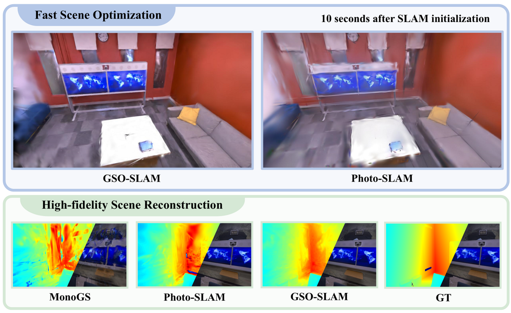
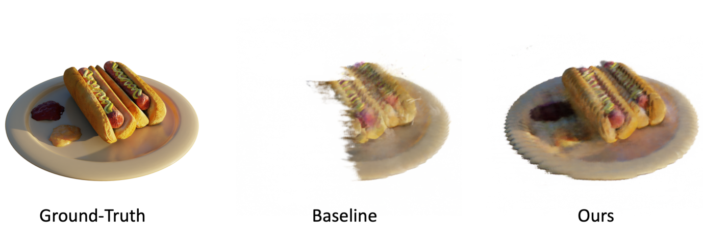
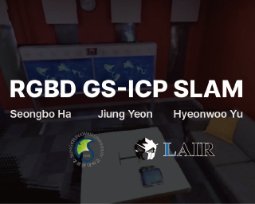
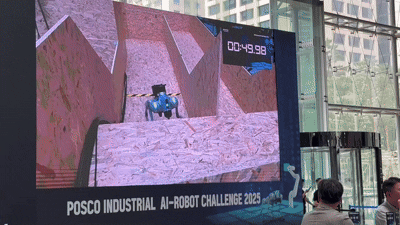
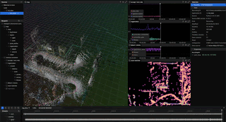
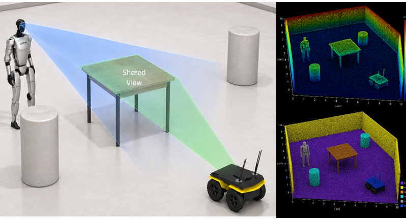
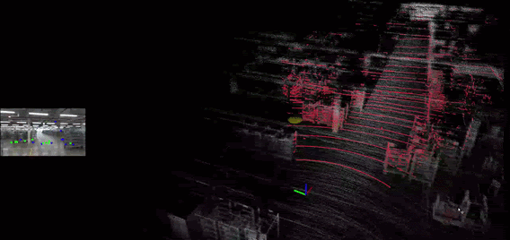
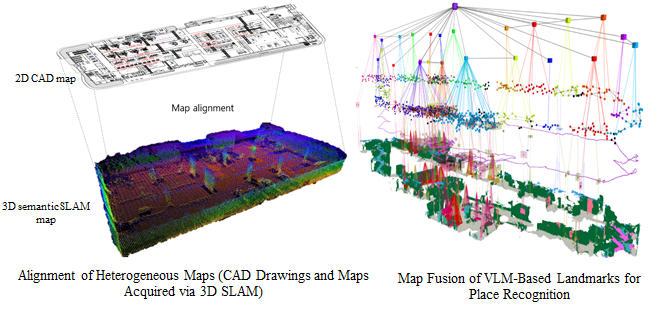
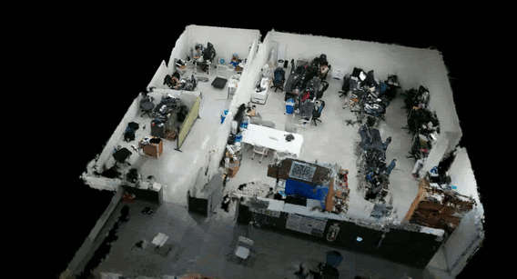
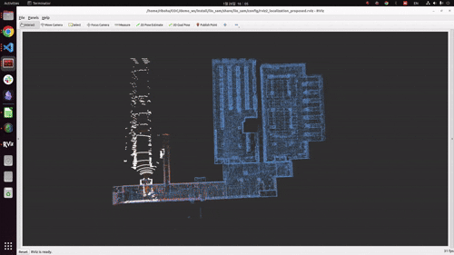

Real-Time LiDAR Gaussian Splatting SLAM
Seungjun Tak, Yewon Jeon, Jaeik Hwang, SukMin Hwang, Seongbo Ha, and Hyeonwoo Yu
In European Conference on Computer Vision (ECCV), 2026
Robotics · SLAM · 3D Representation
M.S.–Ph.D. Combined Course
Sungkyunkwan University
I am a graduate student in Intelligent Robotics, advised by Prof. Hyeonwoo Yu. Previously, I received my B.S. in Electrical Engineering with a minor in Future Mobility from the University of Ulsan. My research interests lie in SLAM and 3D representation. I currently focus on dense-representation SLAM for robots operating in complex and changing environments.
M.S.–Ph.D. Combined Course, Intelligent Robotics
Advisor: Prof. Hyeonwoo Yu
B.S. in Electrical Engineering
Minor in Future Mobility
Seungjun Tak, Yewon Jeon, Jaeik Hwang, SukMin Hwang, Seongbo Ha, and Hyeonwoo Yu
In European Conference on Computer Vision (ECCV), 2026

Jiung Yeon*, Seongbo Ha*, and Hyeonwoo Yu (* equal contribution)
In IEEE Robotics and Automation Letters (RA-L), 2026
Seongbo Ha, Sibaek Lee, Kyeongsu Kang, Joonyeol Choi, Seungjun Tak, and Hyeonwoo Yu
arXiv preprint arXiv:2602.06991, 2026
Sibaek Lee, Seongbo Ha, Kyeongsu Kang, Joonyeol Choi, Seungjun Tak, and Hyeonwoo Yu
arXiv preprint arXiv:2511.16144, 2025
Kyeongsu Kang, Seongbo Ha, Sibaek Lee, and Hyeonwoo Yu
In IEEE Robotics and Automation Letters (RA-L), 2025

Sibaek Lee, Kyeongsu Kang, Seongbo Ha, and Hyeonwoo Yu
In IEEE Robotics and Automation Letters (RA-L), 2025

Seongbo Ha, Jiung Yeon, and Hyeonwoo Yu
In European Conference on Computer Vision (ECCV), 2024
A dense RGB-D SLAM system combining Gaussian Splatting with ICP for high-quality, real-time mapping.
Jehwan Choi, Seongbo Ha, Youlkyeong Lee, and Kanghyun Jo
In 62nd Annual Conference of the Society of Instrument and Control Engineers (SICE), 2023
Seongbo Ha, Seongmin Kim, and Kanghyun Jo
In KSIC, 2022
Seongbo Ha and Kanghyun Jo
In ICROS, 2022
Seongmin Kim, Seongbo Ha, Kyeongmin Yu, and Kanghyun Jo
In KSIC, 2021

First-prize-winning robotic system developed for an industrial AI challenge.





Dense SLAM for embedded systems operating in changing environments.

Sensor fusion for map-based localization of autonomous mobile robots in dynamic environments.
Sungkyunkwan University · IITP grant funded by MSIT
Robotic manipulation of thin, non-rigid objects for battery-pack recycling · MOTIE
Field-use visualization and 6-axis rotational angle sensing · MOTIE
Spatial and task generalization framework · National Research Foundation of Korea
First Prize
Invited Talk
Full Scholarship
First Prize
Second Prize